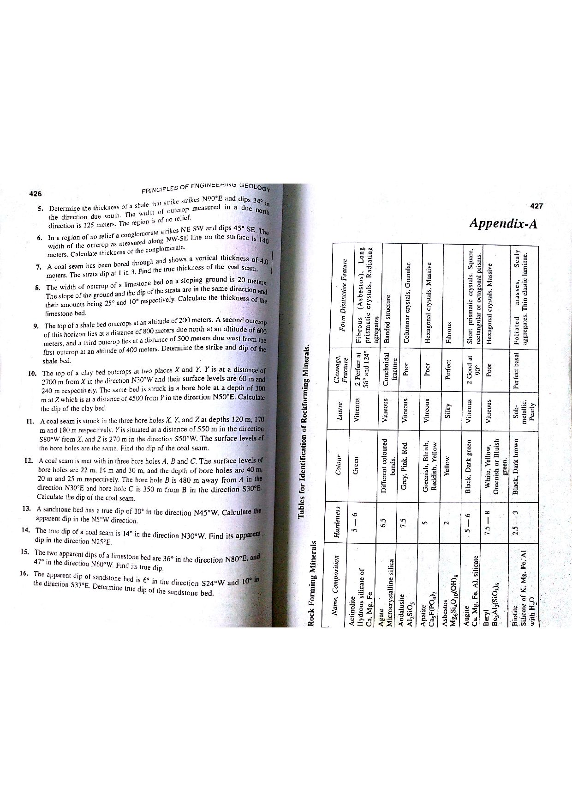

Q135: Digital GIS Data Creation: Vector Digitization and Orthorectified Imagery
In Geographic Information Systems (GIS), digital photogrammetry, and geoinformatics, digital data creation is the operational process of encoding geographical phenomena into computer-readable digital spatial formats (vector geometries and georeferenced raster datasets) (Chang, 2019; Lillesand et al., 2015; Bangar, p. 220).

The Two Primary Methods in Digital GIS Data Creation
As codified in standard geoinformatics curricula, the creation of GIS databases relies fundamentally on:
-
1. Digitization (Vector Data Creation):
The process of converting geographic features from analog paper maps, aerial photos, or field survey field-sheets into digital vector formats (Points, Lines, Polygons):
- Heads-Up (On-Screen) Digitization: Tracing features directly on a high-resolution computer monitor over georeferenced raster basemaps, DEMs, or satellite scenes using a mouse or graphics stylus.
- Tablet Digitization: Mounting historical hardcopy paper maps on an electromagnetic digitizing tablet and tracing features with a high-precision multi-button cursor (puck).
- Automated / Semi-Automated Vectorization: Employing pattern recognition and edge-detection algorithms to convert scanned black-and-white contour sheets into vector polylines.
-
2. Orthorectified Imagery (Raster Data Creation & Base Layer):
Raw aerial photographs and high-resolution satellite imagery contain severe geometric distortions caused by camera tilt, optical lens aberrations, and terrain relief displacement:
- Orthorectification: A rigorous photogrammetric process that mathematically rectifies every pixel using exterior orientation parameters, camera calibration data, and a high-resolution Digital Elevation Model (DEM) to eliminate relief displacement ($d = r \cdot h / H$).
- The resulting Orthophoto / Orthoimage possesses a planimetrically uniform scale across its entire extent, functioning as a true map upon which distances, angles, and surface areas can be directly measured.
- It serves both as an independent digital raster data product and the premier visual backdrop for heads-up digitization of geological formations, structures, roads, and land parcels.

Electronic Communications vs. Spatial Data Science
Option (C) introduces the term Demodulation, which is an electronic engineering concept with zero function in GIS digital data creation:
- Definition of Demodulation: In telecommunications and electronic signal processing, demodulation is the inverse process of modulation. It extracts the original baseband information-bearing signal (voice, audio, binary data) from a high-frequency analog carrier radio wave (e.g., in AM/FM radio receivers, optical fiber transceivers, or DSL telephone modems).
- Absence in Spatial Modeling: Demodulation creates no geographical geometries, builds no vector primitives, rectifies no aerial imagery, and populates no GIS attribute tables. It was deliberately inserted into the exam paper as an acoustic/electronic distractor to test candidate vocabulary discernment.
Mathematical Mechanics of Relief Displacement ($d$)
In an unrectified aerial photograph, high terrain points are displaced radially outward from the nadir/principal point, while depressions are displaced inward:
Because relief displacement alters apparent distances, an unrectified aerial photo cannot be used as an accurate spatial GIS layer. Orthorectification applies the collinearity equations on a pixel-by-pixel basis using a DEM to project every pixel into its true orthogonal map location:
- (A) Digitization
- (B) Orthorectified imagery
- (C) Demodulation
- (D) Both (A) and (B)
Digitization is the fundamental technique used to convert analog graphic features (paper geological maps, survey plans) into digital vector geometries (Points, Lines, Polygons) via manual heads-up screen tracing or digitizing tablets. However, selecting Option (A) alone fails to recognize that Orthorectified Imagery is equally an indispensable digital creation method.
Orthorectified imagery (orthophotography) is generated by correcting raw aerial or satellite images for camera tilt and terrain relief displacement using photogrammetry and DEMs. It produces true planimetric digital raster layers that serve as direct spatial datasets and primary basemaps. Selecting (B) alone is incomplete.
Demodulation is an electronic hardware process used in radio communication systems and modems to recover an analog or digital information signal from a high-frequency carrier wave. It has no application in spatial GIS data creation.
In Geographic Information Systems literature (Bangar, p. 220; Chang, Ch. 5; Lillesand et al.):
- Digitization provides the primary vector capture pipeline.
- Orthorectified imagery provides the primary raster capture and photogrammetric basemap pipeline.
Therefore, Option (D) correctly identifies both established spatial data creation techniques.
| Method | Primary Output Format | Source Material | Key Equipment / Software | Geological Application |
|---|---|---|---|---|
| Heads-Up (On-Screen) Digitization | Vector (Points, Polylines, Polygons) | Scanned geological maps, orthoimagery, DEM hillshades | GIS software (QGIS, ArcGIS), high-resolution monitors, graphics tablet | Tracing fault systems, lithological boundaries, dyke swarms, mining lease perimeters. |
| Orthorectified Imagery (Photogrammetry) | Raster (GeoTIFF, ECW, IMG with planimetric metric scale) | Raw aerial photos, satellite imagery (WorldView, Sentinel, Landsat) + DEM | Digital photogrammetry workstations, bundle block adjustment software | Planimetrically accurate visual base maps, regional structural mapping, open-pit pit wall monitoring. |
| Tablet Manual Digitization | Vector (Points, Lines, Polygons) | Original historical paper maps, archival mylar sheets | Electromagnetic digitizer table ($36'' \times 48''$), 16-button puck cursor | Legacy map conservation; converting pre-digital paper geological maps. |
| Automated Vectorization | Vector Polylines | High-contrast binary scanned raster contour sheets | Raster-to-vector tracing algorithms, center-line thinning filters | Mass conversion of topographic elevation contours. |
| GNSS / GPS Field Surveying | Vector (3D Points & Tracks) | Direct in-situ satellite signal acquisition | Differential GPS / RTK receivers ($< 1\text{ cm}$ precision) | Drill hole collar surveying, claim boundary pegging, geological outcrop ground-truthing. |
A vertical aerial photograph is taken from an aircraft flying at an altitude $H = 3000\text{ m}$ above sea level datum with a camera of focal length $f = 152.4\text{ mm}$. A mountain summit has an elevation of $h = 450\text{ m}$ above datum. On the photograph, the image of the summit is measured at a radial distance $r = 85.0\text{ mm}$ from the principal point. Calculate the relief displacement ($d$) of the summit image in millimeters.
1. Use the relief displacement formula: $$d = \frac{r \cdot h}{H}$$ 2. Substitute given values ($r = 85.0\text{ mm}, h = 450\text{ m}, H = 3000\text{ m}$): $$d = \frac{85.0\text{ mm} \times 450\text{ m}}{3000\text{ m}} = \frac{38,250}{3000} = 12.75\text{ mm}$$ The mountain summit is displaced radially outward from its true planimetric position by $12.75\text{ mm}$. Orthorectification shifts this pixel back by exactly $12.75\text{ mm}$.
A digital aerial photogrammetric camera has a focal length $f = 100.0\text{ mm}$ and a CCD sensor pixel size of $p = 5.2\ \mu\text{m}$ ($0.0052\text{ mm}$). If the survey aircraft flies at an altitude $H = 1500\text{ m}$ above average terrain ground level, calculate the Ground Sampling Distance (GSD) of the resulting raw imagery in centimeters per pixel.
1. Calculate scale of the aerial photograph ($S$): $$S = \frac{f}{H} = \frac{0.100\text{ m}}{1500\text{ m}} = \frac{1}{15,000}$$ 2. Calculate Ground Sampling Distance (GSD): $$\text{GSD} = \frac{p}{S} = p \times \left(\frac{H}{f}\right) = 0.0052\text{ mm} \times 15,000 = 78.0\text{ mm} = 7.80\text{ cm/pixel}$$ The spatial resolution of the orthophoto is $7.8\text{ cm}$ per pixel.
When georeferencing and rectifying an unprojected scanned historical geological map into a 2D projected coordinate system, the general 2D polynomial transformation of order $n$ requires a minimum number of Ground Control Points ($N$) given by: $$N_{\text{min}} = \frac{(n + 1)(n + 2)}{2}$$ Calculate the minimum number of GCPs required for: (a) a 1st-order Affine transformation, (b) a 2nd-order polynomial transformation, and (c) a 3rd-order projective transformation.
1. 1st-Order Affine ($n = 1$): $$N_{\text{min}} = \frac{(1 + 1)(1 + 2)}{2} = \frac{2 \times 3}{2} = 3\text{ GCPs (minimum 4 recommended for redundancy)}$$ 2. 2nd-Order Polynomial ($n = 2$): $$N_{\text{min}} = \frac{(2 + 1)(2 + 2)}{2} = \frac{3 \times 4}{2} = 6\text{ GCPs}$$ 3. 3rd-Order Polynomial ($n = 3$): $$N_{\text{min}} = \frac{(3 + 1)(3 + 2)}{2} = \frac{4 \times 5}{2} = 10\text{ GCPs}$$
A scanned geological map is georeferenced using four Ground Control Points (GCPs). The measured residual errors in Easting ($\Delta X$) and Northing ($\Delta Y$) in meters are: GCP 1: $\Delta X = +1.2\text{ m}, \Delta Y = -0.8\text{ m}$; GCP 2: $\Delta X = -1.5\text{ m}, \Delta Y = +1.0\text{ m}$; GCP 3: $\Delta X = +0.6\text{ m}, \Delta Y = +1.4\text{ m}$; GCP 4: $\Delta X = -0.9\text{ m}, \Delta Y = -1.1\text{ m}$. Calculate: (a) $\text{RMSE}_x$, (b) $\text{RMSE}_y$, and (c) Total Planimetric $\text{RMSE}_{\text{total}}$.
1. Compute sum of squared residuals: $$\sum \Delta X^2 = (1.2)^2 + (-1.5)^2 + (0.6)^2 + (-0.9)^2 = 1.44 + 2.25 + 0.36 + 0.81 = 4.86\text{ m}^2$$ $$\sum \Delta Y^2 = (-0.8)^2 + (1.0)^2 + (1.4)^2 + (-1.1)^2 = 0.64 + 1.00 + 1.96 + 1.21 = 4.81\text{ m}^2$$ 2. Compute component RMSEs ($N = 4$): $$\text{RMSE}_x = \sqrt{\frac{4.86}{4}} = \sqrt{1.215} \approx 1.102\text{ m}$$ $$\text{RMSE}_y = \sqrt{\frac{4.81}{4}} = \sqrt{1.2025} \approx 1.097\text{ m}$$ 3. Total Planimetric RMSE: $$\text{RMSE}_{\text{total}} = \sqrt{\text{RMSE}_x^2 + \text{RMSE}_y^2} = \sqrt{1.215 + 1.2025} = \sqrt{2.4175} \approx 1.555\text{ m}$$
During heads-up manual digitization of geological faults, a GIS operator sets a snapping tolerance of $d_{\text{snap}} = 5\text{ screen pixels}$ at a display scale where $1\text{ pixel} = 2.0\text{ meters on ground}$. If an incoming fault polyline endpoint terminates at a ground distance of $8.5\text{ meters}$ from an existing regional shear zone, determine whether the GIS vertex-snapping engine will automatically snap the endpoint to close the node.
1. Calculate ground snapping distance: $$D_{\text{snap}} = 5\text{ pixels} \times 2.0\text{ m/pixel} = 10.0\text{ meters}$$ 2. Compare endpoint distance to tolerance: $$\text{Actual distance } d = 8.5\text{ m} < D_{\text{snap}} = 10.0\text{ m}$$ Conclusion: Because $8.5\text{ m} \le 10.0\text{ m}$, the endpoint lies inside the active snapping radius. The GIS engine will automatically snap the vertex to the existing line, successfully avoiding an undershoot topological error.
A regional mineral belt covering an area of $20\text{ km} \times 15\text{ km}$ is surveyed to produce an orthorectified digital image mosaic with a Ground Sampling Distance of $\text{GSD} = 0.5\text{ m/pixel}$. The image has 4 spectral bands (Blue, Green, Red, Near-Infrared), each quantized to 8-bit radiometric resolution ($1\text{ byte per pixel per band}$). Calculate the uncompressed file size of the digital orthoimage in Gigabytes ($\text{GB}$).
1. Image pixel dimensions: $$\text{Columns } X = \frac{20,000\text{ m}}{0.5\text{ m/pix}} = 40,000\text{ pixels}$$ $$\text{Rows } Y = \frac{15,000\text{ m}}{0.5\text{ m/pix}} = 30,000\text{ pixels}$$ $$\text{Total pixels per band} = 40,000 \times 30,000 = 1,200,000,000\text{ pixels (1.2 Gigapixels)}$$ 2. Total file size for 4 bands at $1\text{ byte/pix/band}$: $$\text{Bytes} = 1.2 \times 10^9 \times 4 \times 1\text{ byte} = 4.8 \times 10^9\text{ bytes}$$ Convert to Gigabytes ($\text{GB}$, where $1\text{ GB} = 10^9\text{ bytes}$ or $1\text{ GiB} = 2^{30}\text{ bytes}$): $$\text{File Size} = \frac{4.8 \times 10^9}{10^9} = 4.80\text{ GB}$$
After automated vectorization of a scanned drainage network, automated topological validation detects 42 "dangle nodes" (dead-end lines). Inspection reveals: - 28 dangles represent natural stream spring heads (valid first-order tributaries). - 10 dangles are undershoots that stopped short of intersecting the main river trunk. - 4 dangles are overshoots that crossed past the main river trunk due to tracing inertia. Determine: (a) how many errors must be topologically corrected, and (b) what automated geoprocessing tool is executed to fix the undershoots within a $15\text{ m}$ search distance.
1. Topological errors to correct: $$\text{Errors} = 10\text{ undershoots} + 4\text{ overshoots} = 14\text{ topological errors}$$ (The 28 natural headwater springs are genuine geographic endpoints and must be preserved). 2. Automated Geoprocessing Tool: Execute the Extend Line tool (with an extension length of $15.0\text{ m}$) to snap the 10 undershoots to the main channel, followed by the Trim Line tool to eliminate the 4 overshoots.
An unmanned aerial vehicle (UAV / Drone) surveys an open-pit iron ore quarry for orthoimagery generation. The flight lines are planned with $75\%$ forward longitudinal overlap and $60\%$ lateral side overlap. If the camera footprint on the ground at the design flying height covers an area of $240\text{ m} \times 160\text{ m}$ ($240\text{ m}$ across-track $\times 160\text{ m}$ along-track), calculate: (a) the forward air base advance distance between successive photo triggers, and (b) the line spacing between adjacent parallel flight traverses.
1. Forward advance distance between photos ($75\%$ overlap): $$\text{Forward advance } B = (1 - 0.75) \times 160\text{ m} = 0.25 \times 160\text{ m} = 40.0\text{ meters}$$ 2. Lateral line spacing between flight lines ($60\%$ side overlap): $$\text{Line spacing } W = (1 - 0.60) \times 240\text{ m} = 0.40 \times 240\text{ m} = 96.0\text{ meters}$$ The drone triggers an image every $40\text{ m}$ along flight lines spaced $96\text{ m}$ apart to ensure seamless stereoscopic overlap for orthorectification.